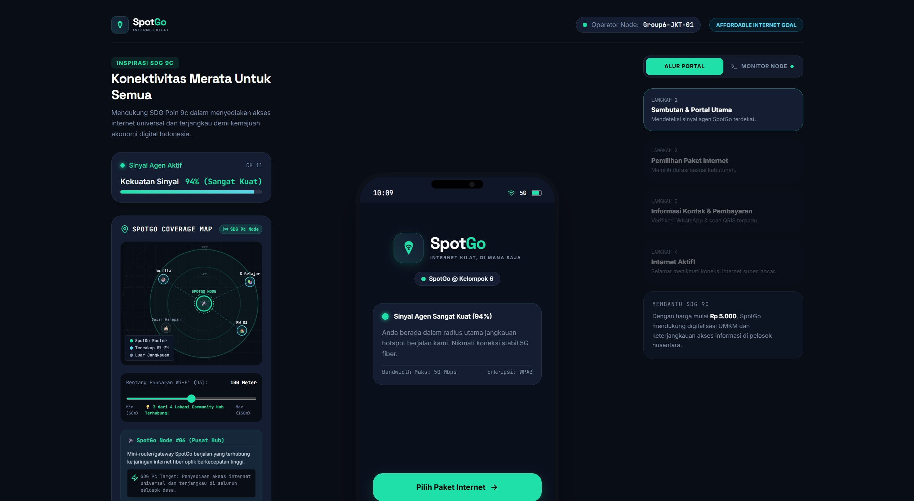

Pengujian kelayakan konsep melalui prototipe interaktif SpotGo. Menggambarkan antarmuka, pemetaan jangkauan, dan alur captive portal.
Untuk memberikan gambaran nyata mengenai bagaimana sistem "Hotspot Berjalan" ini beroperasi secara digital, kami telah menyusun sebuah purwarupa (prototype) berbasis web. Tampilan ini menyimulasikan dasbor utama dan pengalaman pengguna (UX) pada perangkat mobile.

Di sisi kiri antarmuka, terdapat panel simulasi radius Wi-Fi (Coverage Map). Fitur interaktif ini menunjukkan seberapa jauh sinyal dari router mobile agen memancar. Admin atau agen dapat melihat visibilitas perangkat pengguna yang terhubung di sekitarnya.
Bagian tengah dasbor mendemonstrasikan layar smartphone. Ini adalah representasi persis dari apa yang dilihat pengguna akhir (kustomer) ketika mereka pertama kali terhubung ke sinyal SpotGo. Tanpa perlu download aplikasi, sistem akan langsung membuka halaman ini.
Antarmuka secara transparan menunjukkan misi utama: menyediakan akses internet universal dan terjangkau (mulai dari Rp 5.000). Visualisasi sinyal yang "Sangat Kuat" (94%) membuktikan bahwa internet instan dapat dihadirkan tepat di pusat kebutuhan.
Setelah pengguna menghubungkan Wi-Fi di ponsel mereka, jaringan secara otomatis mendeteksi perangkat (MAC Address) dan mengarahkan (redirect) ke halaman sambutan ini untuk mengecek kekuatan sinyal agen SpotGo terdekat.
Pengguna dapat memilih durasi atau kuota internet sesuai kebutuhan darurat mereka di lokasi tersebut (misalnya paket 1 Jam, 2 Jam, atau 24 Jam) dengan harga yang sangat terjangkau bagi masyarakat umum.
Sistem dirancang mandiri (self-service). Pengguna memasukkan detail dasar (seperti nomor WhatsApp untuk struk digital) dan melakukan proses pemindaian QRIS yang terpadu langsung di layar ponsel.
Setelah pembayaran melalui API Gateway diverifikasi (biasanya dalam hitungan detik), sistem membuka blokir jaringan untuk pengguna. Kustomer dapat langsung berselancar, memesan transportasi online, atau berjejaring dengan koneksi yang stabil.